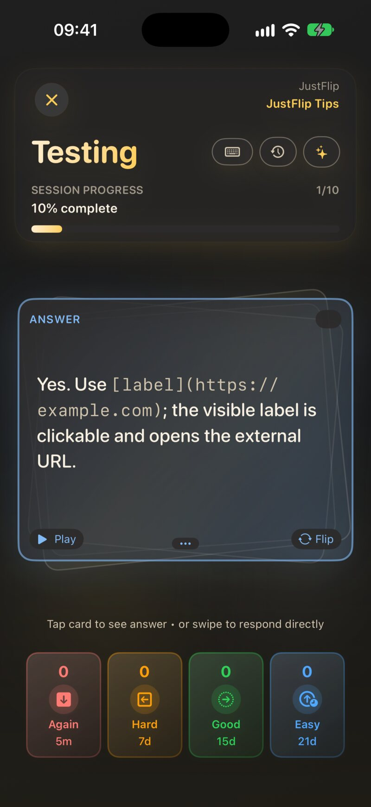
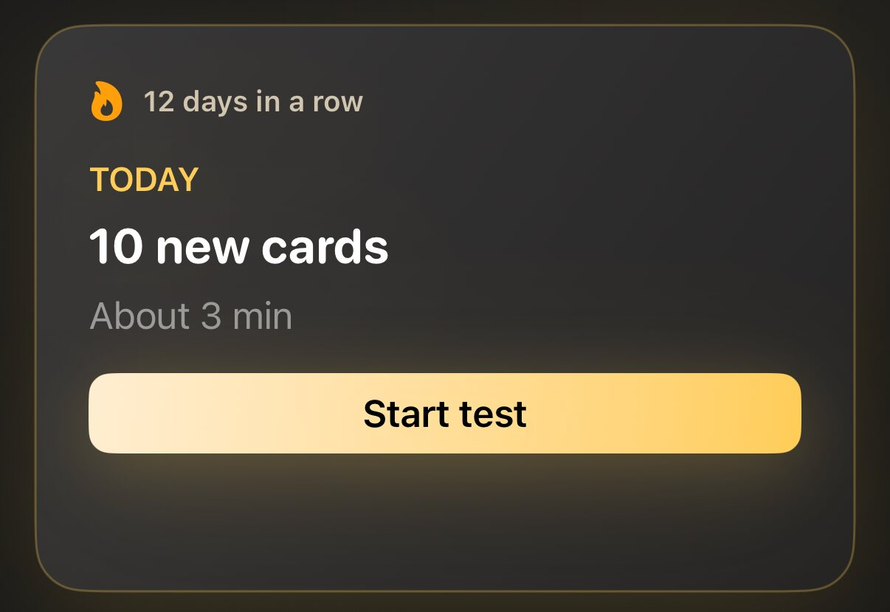
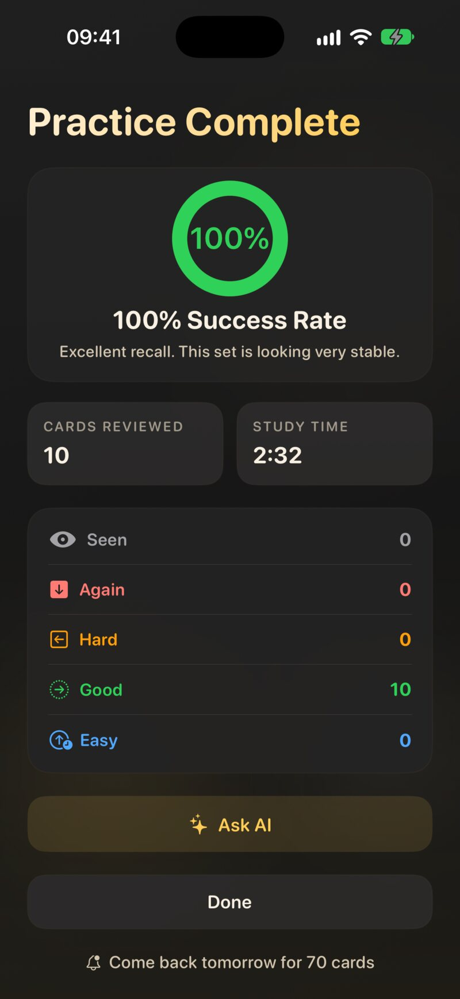

2.1 The review loop
Every review works the same way:
- Read the question and try to recall the answer. Really try: the effort of remembering is what makes it stick.
- Flip the card. Tap it, or press Space on a keyboard.
- Grade yourself. Tap how well you knew it, or swipe the card.
- The next card slides in. A short note at the bottom, such as Next: 3d, tells you when the card you just graded comes back.
The bar at the top shows how far through the session you are. To stop early, close the session and confirm with Exit. Everything you have graded so far is saved; the session is simply not counted as complete.

You don’t have to flip at all. If you knew the answer instantly, grade the question side straight away with a button or a swipe. The hint under the card says so: Tap card to see answer • or swipe to respond directly.
2.2 The four grades
The grade buttons sit under the card. Each one shows the interval it would give this card, so you always know what you are choosing.
| Grade | Colour | Key | Swipe | Means | A new card returns in |
|---|---|---|---|---|---|
| Again | Red | 1 | Down | You didn’t know it | 5 minutes |
| Hard | Orange | 2 | Left | You got there, with effort | 20 minutes |
| Good | Green | 3 | Right | You knew it | 1 day |
| Easy | Blue | 4 | Up | You knew it instantly | 4 days |
After the first time, the intervals grow with each correct answer. Good multiplies the last interval, Easy stretches it further, Hard grows it only a little, and Again starts the card over with a short step. The numbers on the buttons change with every card. Chapter 6 explains the arithmetic.
It is tempting to press Good on a card you almost knew. Don’t: the card then comes back after it has faded. An honest Hard or Again costs you one extra look now and saves you many later. The keys 1–4 and Space work on a Mac and on an iPad with a keyboard, unless you are typing in a text field.
2.2.1 Seen, the fifth response
There is one more response, which you never press: Seen. The first time you flip a card while browsing a deck’s card list, outside a review, JustFlip! notes that you have seen it. Seen isn’t a grade. It doesn’t count as knowing or missing the card; it only records that the card is no longer untouched. In the card list, a grey eye marks such a card, while the other colours show the last grade you gave.
2.3 Peeking and Stricter grading
By default, all four grades stay available after you flip, because flipping to check yourself is part of the loop. If you would rather be strict, turn on Settings › Behavior › Stricter grading (Limit options when card is flipped). It is off by default.
With Stricter grading on, flipping a card counts as looking up the answer. Only Again and Hard remain, the right and up swipes stop working, and the hint changes to Tap card to flip • swipe left (Hard) or down (Again). To give Good or Easy, grade the question side before you flip.
An image occlusion card can’t be answered without revealing its masks, so revealing one never counts as peeking. All four grades stay available (Chapter 4).
2.4 Where to start a review
There are three places to start a review, and each one picks cards differently.
| Where | Choose | Which cards |
|---|---|---|
| Today (Interests screen) | Start review | Due cards from every interest, then new cards up to your daily allowance |
| Decks screen, ▶ menu | Due Cards | This interest’s cards whose review time has come |
| Struggling Cards | Cards you last graded Again or Hard | |
| New Cards | Cards you have never studied | |
| Cards (a deck), ▶ menu | Due Cards | This deck’s cards whose review time has come |
| All Cards | Every card in the deck | |
| Struggling Cards | Cards you last graded Again or Hard |
On the Decks screen, the menu shows a count next to each item, such as Struggling Cards (6). An item with nothing in it is greyed out. Retired and postponed cards are left out of every mode except All Cards.
Due, Struggling and New sessions come in batches of Cards per session (Settings › Behavior, 20 by default). When more cards are waiting, the results screen offers to carry on.
All Cards is a cram mode. It shows every card in the deck in a shuffled order, including cards you retired and cards you postponed, and it doesn’t stop after one batch. Your grades still count, so cramming a deck the night before an exam moves its schedule too.
A card is struggling when your last grade for it was Again or Hard, even if it isn’t due. A card you graded Hard that is scheduled for next month still shows up under Struggling. That is the point: it is the mode for drilling weak spots, not for keeping up.
New Cards on the Decks screen offers every card you have never studied in that interest, however many new cards you have already met today. Today, by contrast, introduces only as many new cards per day as you allow in Settings. And on a single deck, Due Cards holds only cards you have studied before: a card you have never seen has no review date yet. To start a brand-new deck, use Today, New Cards on the Decks screen, or All Cards.
2.5 Today
The Today panel at the top of the Interests screen answers one question: what should I review right now? It gathers due cards from all your interests into one session.

- The headline reads, for example, 12 due · 5 new. Below it is a time estimate, such as About 5 min.
- Start review starts the session. Before your first review, the button reads Start test.
- The chips underneath, one per interest, start a session with just that interest’s cards. They appear when two or more interests have cards waiting.
- The streak, such as 4 days in a row, counts the days on which you reviewed at least one card. One or two missed days in a long run don’t break it.
A Today session takes the due cards first. Where several interests or decks have cards waiting, their learning priority decides which get more room in the session (Chapter 6). Then come new cards, up to your daily allowance.
2.5.1 New cards per day
Settings › Behavior › New cards per day sets how many never-studied cards Today introduces each day: 5, 10, 15 or 20, or None. The default is 10. Cards you have started today count toward that number, so the allowance can’t grow by studying more sessions. Next to it, Cards per session caps how many cards one Today session holds: 10, 15, 20 or 30, or Unlimited.
Settings › Review pace (Relaxed, Steady or Intense, Steady by default) tunes how much Today asks of you each day and how quickly decks start to look overdue. Chapter 6 explains it.
2.5.2 All caught up
When today’s reviews are done and no new cards are waiting, Today says All caught up. It tells you when the next cards come due, for example Next review tomorrow · 8 cards, and shows a small Next 7 days chart of what is coming. You can still study at any time from the Decks or Cards screen.
2.6 During a session
The row above the card holds a few extra controls:
- Postpone. Holds the current card, its deck or its whole interest until Tomorrow, In 3 days, In 1 week or a Custom date…. Postponed cards stay out of reviews until then. Chapter 6 has the details.
- Ask AI. Builds a study prompt about the current card, or about its whole deck (Pro), to paste into a chat AI (Chapter 9).
- Type Answers. Type your answer before you flip, and JustFlip! compares it with the card: Correct!, Close — compare carefully or Not quite. You still choose the grade.
- Open Deck. Leaves the session and opens the deck the current card comes from. What you have graded so far is kept.
2.7 The results screen
When the session ends, you see Practice Complete with your success rate, the number of Cards Reviewed, and your Study Time. The success rate counts Good and Easy as correct.

If more cards are waiting beyond this batch, the heading reads, for example, Nice — 20 done, and a Review 15 more button carries on with the next batch. At the true end of a session, JustFlip! may add Come back tomorrow for 8 cards. After a single-deck review, Restart runs the same mode again. Done takes you back.
Two kinds of suggestion can appear underneath:
- You know these well. Cards you graded Good or Easy in this session that are now far out in the schedule: an interval of at least 90 days and at least 4 correct answers in a row. Each has a Retire button, and Undo if you change your mind.
- These keep slipping away. Cards you graded Again that you have forgotten many times: 8 times or more, without a recovery run of 3 correct answers. Such a card is usually badly worded. Try splitting it into smaller cards, or retire it if it no longer matters.
2.8 Retiring a card
Retiring a card says “I know this, stop testing me”. JustFlip! only ever suggests retiring; it never retires a card by itself.
A retired card:
- no longer appears in Today, Due Cards, Struggling Cards or New Cards, and no longer counts as due;
- still appears in All Cards, and still counts toward the deck’s mastery;
- keeps its full history, and a Retired badge in the card list.
You can retire any card yourself: press and hold it in the card list and choose Retire card. To bring it back, choose Reactivate card. A reactivated card picks up its schedule exactly where it left off.
2.9 Daily reminders
Spaced repetition only pays off when it is regular, and a gentle nudge helps. Reminders are off until you turn them on. Turn them on on the last page of the welcome tour, or later in Settings › Reminders › Daily review reminder: One nudge a day, only when cards are due.
The first time you turn it on, iOS asks whether JustFlip! may send notifications; allow it. Pick the time with Reminder time; it starts at 7 pm. The notification reads, for example, Time to review with 12 cards ready · about 3 min.
In the same section, Streak rescue adds a gentle evening reminder on days when you haven’t reviewed yet and your streak is at risk.
If you once declined notifications, JustFlip! can’t ask again. Turn them on in the iOS Settings app, under Notifications › JustFlip, and the reminder starts working.